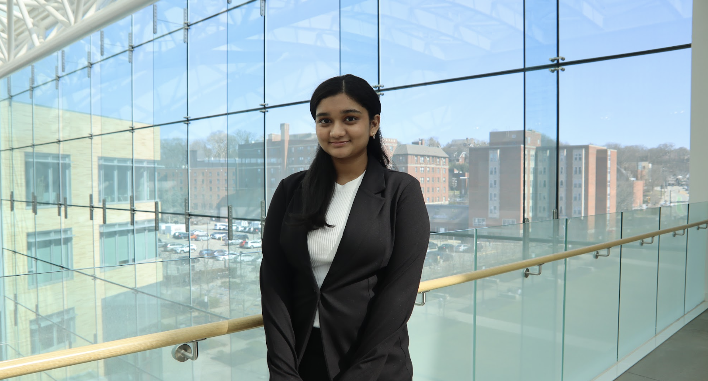

Hi, my name is Aditi!

Hi there! My name is Aditi Agni. I am currently a freshman at Carnegie Mellon University (CMU), in Pittsburgh, PA, and I am studying Information Systems and am potentially looking into minoring in Software Engineering. While I attend school in Pittsburgh, I am originally from Albany, NY but have enjoyed the change in scenery.
read more...
Since coming to college I have taken it upon myself to deeply explore my interests and have joined various clubs that speak to me. Most importantly, I am a member of CMU Saans, Carnegie Mellon University’s premier South Asian fusion A Cappella Team, CMU 180 DC, a pro-bono student consultancy consulting for local/nationwide nonprofits, such as NASA, Goodwill, and the Ronald McDonald House, and CMU Scottylabs a student run organization with various committee that puts together events and applications to improve the experience of CMU’s student body. Currently I am serving on the Tech Committee where I have helped develop UI and front-end for Scotty Labs specific applications to maximize user accesibility but am also an Events Organizer. I recently was heavily involved in organizing TartanHacks, CMU and Pittsburgh’s largest hackathon and am currently organizing Nova, a week-long builder event in emerging technology. Navigate through this website to learn more about these experiences (and more!) as well as my interests and hobbies! Thanks for visiting!
read less